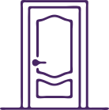
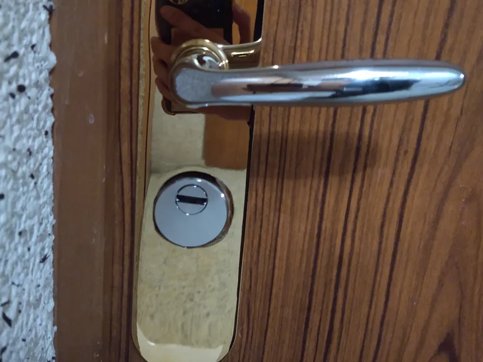

Ouverture de porte
Claquée, verrouillée ou clé cassée : j’ouvre sans casse chaque fois que c’est possible.
- Porte claquée derrière vous
- Porte verrouillée, clé introuvable
- Clé cassée dans la serrure
Où j'interviens
Porte claquée, serrure bloquée, cylindre à changer : j’interviens à vélo cargo dans l’est de Toulouse, de Bonnefoy à la Terrasse, en général en moins de 30 minutes.
Ma zone en un clic

Chez vous
À l’est, les logements mêlent immeubles, résidences et maisons de ville, par exemple vers Jolimont ou la Côte Pavée. Porte d’entrée, cylindre, serrure ou poignée : je m’adapte à chaque logement, et l’ouverture sans casse reste ma priorité.
Ce que je fais

Claquée, verrouillée ou clé cassée : j’ouvre sans casse chaque fois que c’est possible.
Un cylindre qui fatigue, ou une serrure à renforcer.
Après une effraction, ou pour mieux protéger vos accès.
Autour de Bonnefoy, de la Roseraie ou de Jolimont, les commerces et locaux professionnels ont besoin d’une porte qui ferme. J’interviens sur :
Une seule personne, de l’appel à la facture.
Le vélo cargo : pas de bouchons sur les grands axes de l’est, et tout l’outillage qui arrive jusqu’à votre porte.
Je couvre aussi Balma.
Vous décrivez la situation, je vous annonce un tarif indicatif avant de me déplacer.
Sur place (30 min max) ou par photos, puis devis édité.
J’ouvre sans casse quand c’est possible ; facture émise, paiement sur place ou par virement.
Appelez-moi : je vous annonce un tarif indicatif avant de me déplacer.
Autres zones